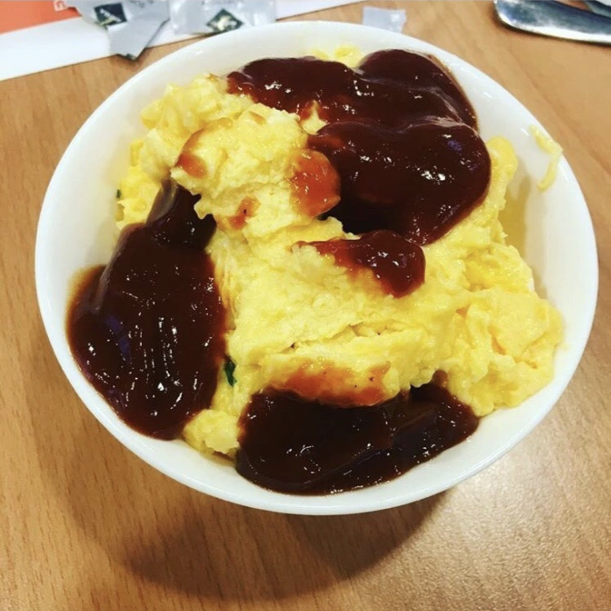

THE JAM AND SCRAMBLED EGGS RECIPE

DESCRIPTION
Without a doubt, Odin's Jam and Scrambled Eggs recipe was one of the most phenomenonal dicoveries of the 21st century
You can read more about Odin's tremendous creation below, or give this recipe a try, and savor in its goodness.
INGREDIENTS
- 4 Large eggs
- 1/4 cup half-n-half
- 1 tablespoon unsalted butter
- black pepper
- Fresh chopped herbs,
STEPS
- Whisk eggs, half-n-half, and salt until uniform
- Melt butter in a non-stick pan over medium heat
- Add the eggs to the center of the pan and immediately reduce heat to medium-low
- Use a rubber spatula to gently push the eggs around unti the eggs are mostly cooked
- Remove from heat and transfer tp serving plates
- Finish with some fresh pepper, chopped herbs an the ketchup
- Coat with jam as preferred
Return to Homepage